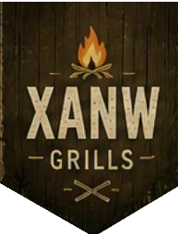

생존은 선택이 아니라 준비다.
위기는 언제든 찾아온다.
XANW GRILLS는 실제 생존 상황을 기반으로 생존 준비, 자원 확보, 거점 구축, 에너지 활용, 응급 대처와 이동 기술을 체계적으로 정리합니다.
커리큘럼 보기
XANW GRILLS는 실제 생존 상황을 기반으로 생존 준비, 자원 확보, 거점 구축, 에너지 활용, 응급 대처와 이동 기술을 체계적으로 정리합니다.
커리큘럼 보기영국의 철학자 허버트 스펜서가 제시한 용어로, ‘환경에 적응하는 종만이 살아남고, 그렇지 못한 종은 도태되어 사라지는 현상’을 말한다.
충분한 재난대비가 되어 있는 사람이 생존률이 높은 것은 너무도 당연한 사실이다. 적합한 대비가 되어있는 사람이 아니라면, 특정한 상황에서 도태될 수밖에 없으며, 도태되는 자들끼리의 생존경쟁은 약육강식이 될 것이다.
한국은 도시화가 상당히 진행되고 인구밀도가 높기 때문에 개인이 고립되는 상황을 생각하기 힘들다. 또한 공공서비스의 질이 높아 위급상황이 닥치면 경찰, 소방, 군 등의 정부기관이 즉시 출동해 인력을 신속하게 지원해주는 것에 익숙해져 있다.
그러나 이러한 정부의 대응 체제가 실전에서 제대로 돌아가리라는 보장은 없다. 실제 상황에 대한 경험이 충분히 축적되지 못한 경우, 대응 체계는 얼마든지 흔들릴 수 있다.
결국 살아남는 것은 강한 사람이 아니라 준비된 사람이다. 위기는 피할 수 없지만, 대비는 선택할 수 있다. 지금 준비하는 사람이 끝까지 남는다.
기초부터 실전까지, 6주 생존 프로그램
생존가방, 필수 장비 구성
물, 식량 확보 전략
안전한 생존 거점 구축
불, 보온, 에너지 활용
응급 상황 대응
생존 이동 전략